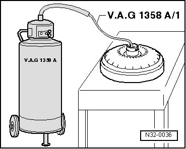

Torque Converter Draining
Torque Converter Draining
Special tools, testers and auxiliary items required
• Oil extraction device (VAG 1358 A)
• Oil extraction sensor (VAG 1358 A/1)
In case of contamination of the Automatic Transmission Fluid (ATF) via shavings or during a major transmission overhaul, the torque converter must be drained as follows:
- Extract ATF from the torque converter using oil extractor (VAG 1358 A) and oil extractor probe (VAG 1358 A).
